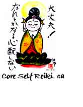

|
|
||
 |
Gendai Reiki Hô | |
|
Ayashiku-nai, |
|
|
Since the 1940s, Reiki Ryoho has spread to the West and has come to be known primarily under two different names: Usui Shiki Ryoho (sometimes also referred to as Usui Reiki) and the Radiance Technique. These two Western styles have developed new treatment techniques and new methods of attunement. In the last 20 years, they have both branched off into more than 50 different sub-systems which have laid further claim to various new symbols and methods. In the end, what all these Western Reiki varieties have in common is that they are based on the understanding of Reiki of Hawayo Takata, the teacher who brought Reiki to the West. Both Western styles have eventually made their way back to Japan where the original Reiki Association, the Usui Reiki Ryoho Gakkai, established by Mikao Usui has been preserving the original teachings of Usui Sensei since the 1920s. There now exist in Japan, as in the Western world, many different Reiki schools. However, the two main sources can be simply referred to as Western Reiki (based on Takatas teachings) and Traditional Japanese Reiki. Gendai Reiki integrates Western Reiki and Traditional Japanese Reiki, some new techniques with the original teachings and the original meditative and energetic practices developed by Usui Sensei. Thus, this system, devoted to the true spirit of the practice of Mikao Usui, focuses on Reiki Ryoho as both an energy healing modality and a path to spiritual self-realization through the enhancement of the level of Reiki energy flow. The motto of Gendai Reiki Hô reflects Doi Senseis commitment to integrity, clarity, practicality, and effectiveness. Gendai Reiki Masters are expected to teach the philosophy of Usui Sensei, pass on accurate information, impart proper understanding of the nature of Reiki, strive to pass on pure Reiki, and live according to the spirit of Reiki. Mr. Hiroshi Doi, the
founder of the Gendai Reiki Healing Association of Japan,
trained with Mr. Ohta, a member of the Hiroshima chapter of
the Usui Reiki Ryoho Gakkai, with Ms. Mitsui (a teacher of
Barbara Rays Radiance Technique), and with a Neo Reiki
Master, before receiving attunement from the 6th president of
the Usui Reiki Ryoho Gakkai, Mrs. Kimiko Koyama, who in turn
had been initiated by Mr. Kanichi Taketomi, one of Usui
Senseis students and 3rd president of the Gakkai. Doi Sensei
is also a member of the Gakkai. It is through this lineage
(Usui Taketomi Koyama Doi) that Gendai Reiki offers a
deep and firm connection with the roots of Reiki and with
Mikao Usui. |
||||||
|---|---|---|---|---|---|---|---|
|
Note: Elyssa Matthews received training in Gendai Reiki Hô from Doi Sensei in 2002, in Toronto, in 2004, in Japan, and again in 2006 and 2010, when she hosted his Master level class in Toronto. Prior to this, she had studied Western Reiki with Martin Stock. In 2011, she had the honour of working with a Japanese translator, upon Doi Sensei's request, to produce the English version of his new manuals. |
|||||||
|
|
|
||||||
|
|
|||||||
|
|